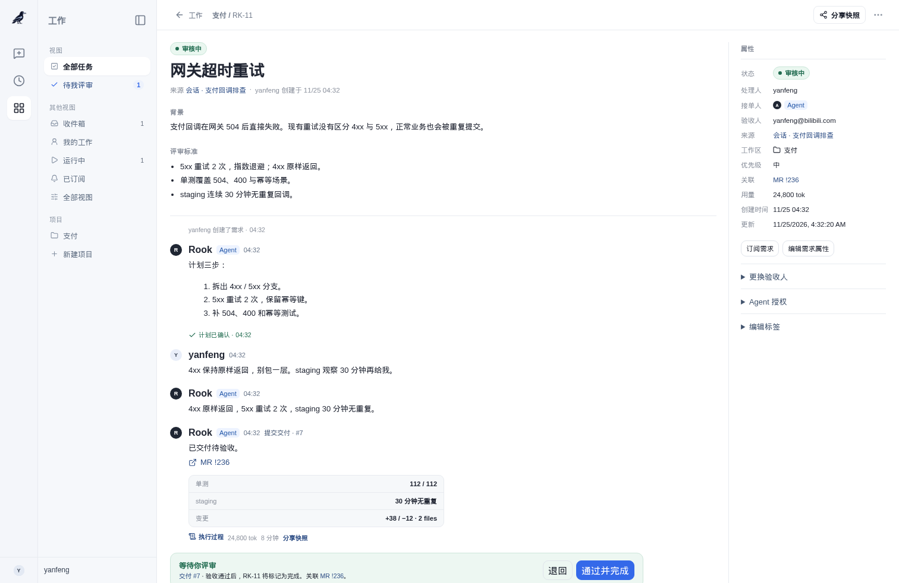
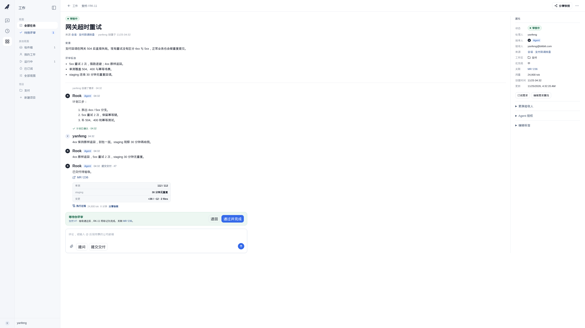
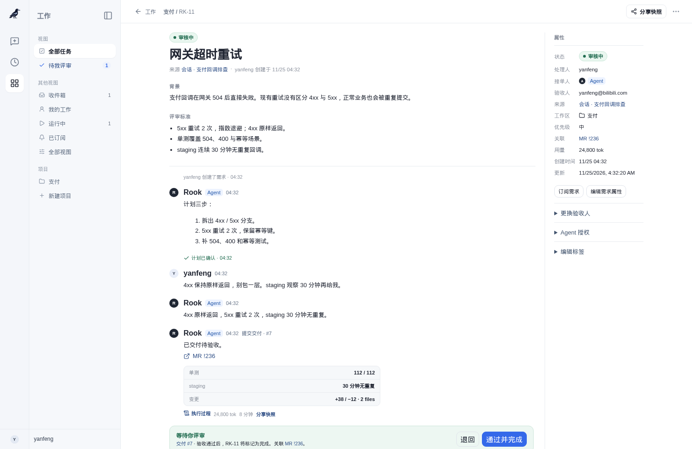
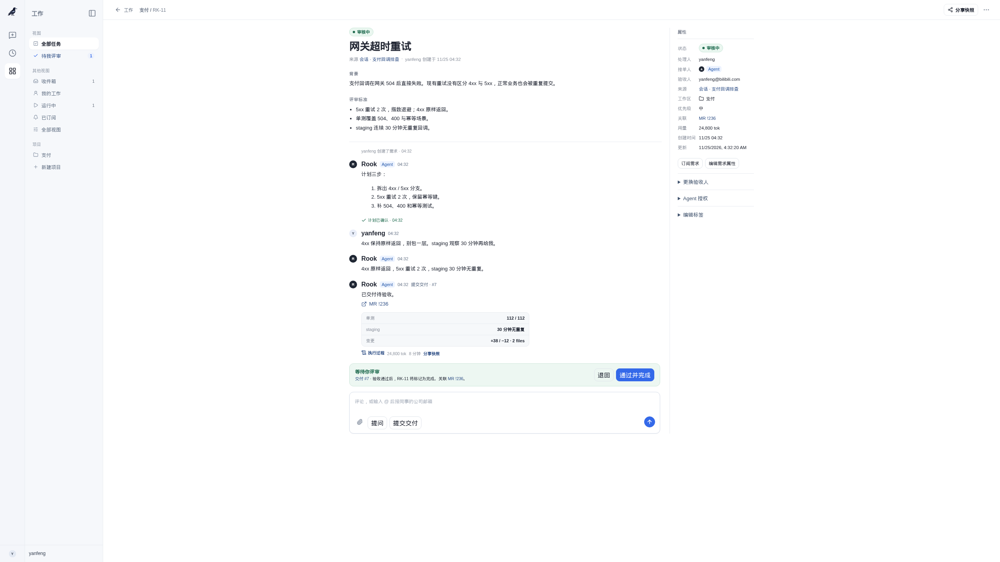
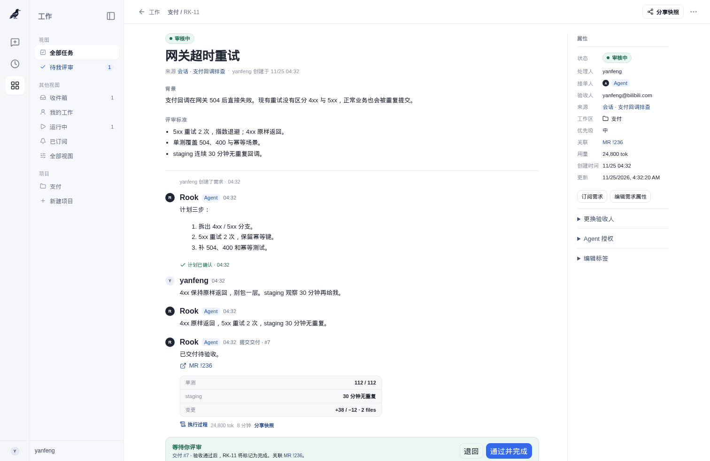
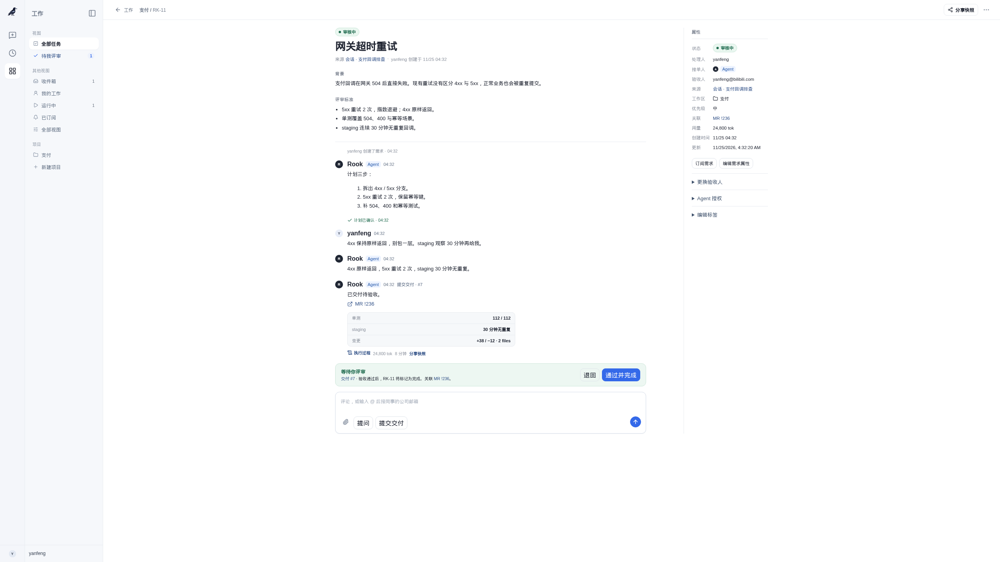

Rook · 需求页
宽屏留白怎么排
同一张 RK-11 需求页，在 MacBook Pro 14 寸和 2K 下的实际渲染。设计稿的任务页是 1080px 页块：正文 796、属性栏 216、间距 20。
- MBP 14″ 默认缩放 1512×982
- 2K 2560×1440
- 正文 796px
- 属性栏 216px
- 设计稿间距 20px
A · 线上 v2026.1125.009
正文贴左，属性栏贴右，中间留白随窗口伸缩。


- 1512
- 正文到属性栏 143px；属性栏 265px；页块占满工作区
- 2560
- 正文到属性栏 1152px；属性栏 304px；页块占满工作区
B · 当前本地改动
1080px 页块居中，正文和属性栏相邻。


- 1512
- 两侧留白 84px；正文到属性栏 24px；属性栏 216px
- 2560
- 两侧留白 608px；正文到属性栏 24px；属性栏 216px
C · 动态间距
正文和属性栏相邻，间距从 20 随窗口增长到 96，整块居中。


- 1512
- 两侧留白 66px；正文到属性栏 60px；属性栏 216px
- 2560
- 两侧留白 572px；正文到属性栏 96px；属性栏 216px
| 排法 | 1512 两侧留白 | 1512 正文↔属性 | 2560 两侧留白 | 2560 正文↔属性 |
|---|---|---|---|---|
| A 线上正文贴左、属性贴右 | 0 | 143px | 0 | 1152px |
| B 页块居中设计稿 1080 页块 | 84px | 24px | 608px | 24px |
| C 动态间距间距 20→96 | 66px | 60px | 572px | 96px |
我的判断
MBP 14″：A 把工作区用满，但正文和属性栏隔了 143px；B 和 C 把两者拉在一起，读需求时眼睛不用跨屏。B 的两侧留白 84px，在这个宽度下已经是设计稿的样子。
2K：A 的正文和属性栏隔了 1152px，评审时属性栏基本脱离视线，这是最该避免的。B 和 C 都保住相邻关系；B 的 608px 外侧留白让页面像一张居中的文档，C 只把中间间距放宽到 96px，外侧留白少 36px，差别不大。
结论：按设计稿优先选 B，它是 1080 页块的严格实现。如果「留白动态」的意思是宽屏下间距也要跟着长，选 C：正文宽度和属性栏不变，只让两者之间呼吸。A 在两个分辨率下都不推荐。
截图来自本地 Chromium，数据是需求页夹具；尺寸取元素的实际布局宽度，未含浏览器窗口边框。线上版本为 v2026.1125.009（提交 859d0d2）。